HƯỚNG DẪN VẬN HÀNH HỆ THỐNG EA HUB
Tài liệu hướng dẫn theo dõi chỉ số tài chính và thiết lập chiến lược giao dịch dành cho Khách hàng
1. Trang Chủ Dashboard (Màn Hình Tổng Quan)
Trang chủ cung cấp bức tranh toàn cảnh về sức khỏe của tài khoản giao dịch trực tuyến theo thời gian thực (real-time). Khách hàng có thể dễ dàng nắm bắt các chỉ số tài chính cốt lõi, số lượng Robot đang hoạt động và mức độ rủi ro chung của danh mục đầu tư ngay tại màn hình tập trung này.
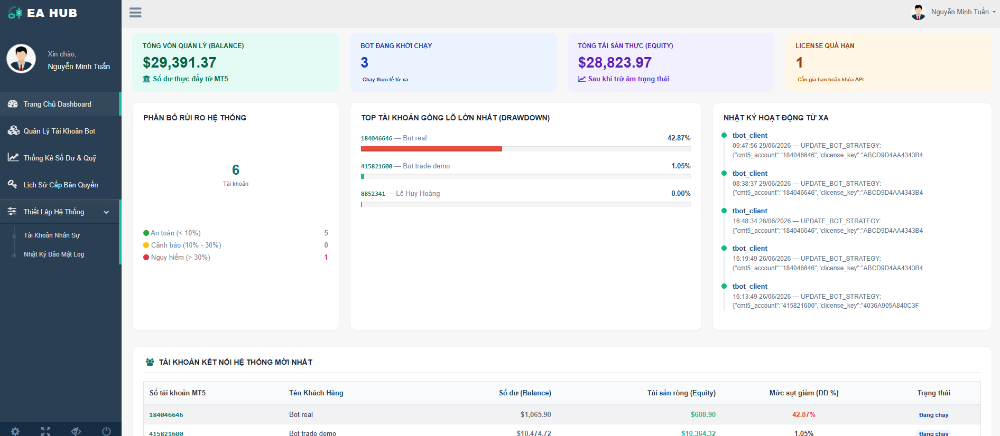
Bốn khối thẻ chỉ số tổng quan ở trên cùng:
Các khối phân tích chuyên sâu ở thân trang:
- Phân Bổ Rủi Ro Hệ Thống: Phân loại mức độ an toàn của tài khoản dựa trên tỷ lệ sụt giảm tài sản tạm thời do gồng lệnh âm (Drawdown %):
- An toàn (< 10%): Tài khoản vận hành ổn định trong biên độ quản lý vốn mục tiêu.
- Cảnh báo (10% - 30%): Thị trường đang đi ngược xu hướng, Robot đang triển khai chuỗi lệnh bảo vệ tài khoản.
- Nguy hiểm (> 30%): Trạng thái thị trường biến động mạnh, Khách hàng cần theo dõi sát để chủ động phương án xử lý hoặc sử dụng nút ngắt khẩn cấp nếu cần.
- Top Tài Khoản Gồng Lỗ Lớn Nhất (Drawdown): Bảng xếp hạng hiển thị trực quan các tài khoản đang có tỷ lệ âm trạng thái cao nhất để Khách hàng dễ dàng ưu tiên kiểm tra hạ tải hoặc điều chỉnh vốn.
- Tài Khoản Kết Nối Hệ Thống Mới Nhất: Danh sách cập nhật nhanh các tài khoản vừa thực hiện đồng bộ tín hiệu thành công, hiển thị đầy đủ Số tài khoản, Họ tên, Số dư và trạng thái kết nối trực tuyến.
2. Quản Lý Tài Khoản Bot (Danh Sách License)
Phân hệ hiển thị thông tin chi tiết về quyền truy cập, theo dõi số liệu và thời hạn hiệu lực của từng mã bản quyền phần mềm. Khách hàng sử dụng bộ lọc tìm kiếm ở đầu bảng để tra cứu nhanh thông tin theo số tài khoản hoặc trạng thái kích hoạt của Robot.
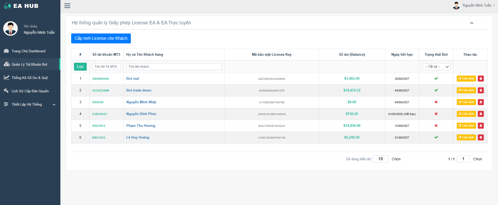
3. Chỉnh Sửa Cấu Hình Chiến Lược Chi Tiết (Settings Form)
Giao diện điều khiển cho phép cấu hình và thiết lập toàn bộ hành vi giao dịch, quy mô phân bổ vốn và các lớp rào chắn phòng thủ của Robot. Biểu mẫu được phân định thành 4 phân khu chức năng rõ ràng để Khách hàng tiện thao tác.
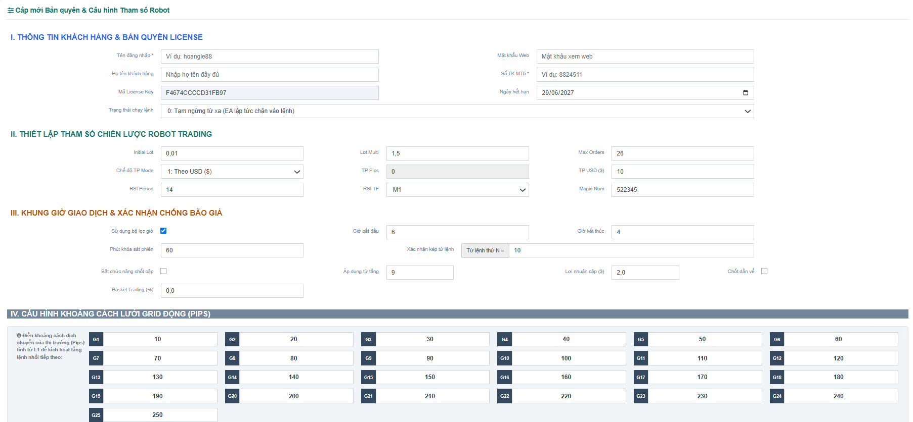
I. THÔNG TIN KHÁCH HÀNG & BẢN QUYỀN LICENSE
Phân khu quản lý thông tin tài khoản truy cập, thiết lập số tài khoản giao dịch đích danh và kiểm soát thời hạn bản quyền phần mềm.
Tên đăng nhập: Tên tài khoản dùng để đăng nhập vào cổng thông tin Client Portal (Ví dụ: khachhang_vanggiam).-
Mật khẩu Web: Mật khẩu bảo mật dùng để đăng nhập xem báo cáo tài chính trực tuyến từ xa.
Họ tên khách hàng: Tên đầy đủ của chủ tài khoản sở hữu để thuận tiện cho việc đối soát.-
Số TK MT5 *: Số tài khoản giao dịch MetaTrader 5, bắt buộc phải trùng khớp chính xác với số tài khoản đang chạy trên phần mềm máy trạm.
Mã License Key: Chuỗi khóa bảo mật được cấp cố định và duy nhất cho số tài khoản giao dịch tương ứng.-
Ngày hết hạn: Mốc ngày dừng hiệu lực của bản quyền phần mềm. Có thể gia hạn bằng cách nhấp chọn biểu tượng lịch tích hợp.
-
1: Khởi chạy từ xa: Cho phép Robot tự động tìm kiếm tín hiệu và giao dịch trên thị trường.
-
0: Tạm ngừng từ xa: Đóng băng quyền giao dịch, không cho phép Robot mở thêm vị thế lệnh mới.
II. THIẾT LẬP THAM SỐ CHIẾN LƯỢC ROBOT TRADING
Khu vực tùy chỉnh các thông số quản trị khối lượng lệnh, phương thức chốt lời và chu kỳ lọc tín hiệu kỹ thuật của thuật toán.
Initial Lot: Khối lượng giao dịch ban đầu (tính theo Lot) của vị thế lệnh đầu tiên khi mở chu kỳ mới.-
Lot Multi: Hệ số nhân tăng trưởng khối lượng cho các tầng lệnh tiếp theo khi thị trường đi ngược xu hướng (Ví dụ: nhân lũy tiến 1.5).
Chế độ TP Mode: Lựa chọn cách thức tính toán mục tiêu chốt lời (0: Tính theo Điểm giá/Pip hoặc 1: Tính theo Tiền mặt Đô-la/USD).-
TP Pips: Khoảng cách điểm giá mục tiêu để đóng lời (Áp dụng khi chọn chốt lời theo Pip).-
TP USD ($): Tổng số tiền lãi ròng bằng Đô-la mong muốn của toàn bộ giỏ lệnh để kích hoạt lệnh tự động đóng sạch trạng thái.
RSI Period: Số chu kỳ tính toán của chỉ báo đo lường động lượng xu hướng (Mặc định: 14).-
RSI TF: Khung thời gian của đồ thị nến (Ví dụ: Khung 1 phút M1, Khung 5 phút M5) dùng làm dữ liệu đầu vào cho Robot phân tích.-
Magic Num: Mã số nhận diện lệnh riêng biệt của Robot, giúp quản lý giỏ lệnh không bị trùng lẫn hoặc chồng chéo nếu tài khoản chạy đồng thời nhiều phần mềm khác nhau.
III. KHUNG GIỜ GIAO DỊCH & XÁC NHẬN CHỐNG BÃO GIÁ
Hệ thống rào chắn phòng thủ, hỗ trợ kiểm soát rủi ro và bảo vệ tài khoản trước các giai đoạn thị trường biến động mạnh hoặc giật một chiều do tin tức tức thời.
Sử dụng bộ lọc giờ: Tích chọn để kích hoạt tính năng kiểm soát thời gian bắt đầu chu kỳ mở lệnh mới.-
Giờ bắt đầu / Giờ kết thúc: Khoảng thời gian trong ngày cho phép Robot mở lệnh đầu tiên (L1), được quy chuẩn theo múi giờ Việt Nam để Khách hàng dễ cấu hình.
Phút khóa sát phiên: Số phút tạm dừng quét tín hiệu trước khi kết thúc khung giờ cho phép, ngăn chặn mở vị thế mới ở thời điểm nhạy cảm.-
Xác nhận kép từ lệnh: Tính năng bảo vệ nâng cao chống bão giá. Khi chuỗi lệnh kéo sâu đạt tới số tầng quy định (Ví dụ: từ lệnh thứ 10), đường giá phải thỏa mãn chu kỳ kiểm tra dao động hai lần tại vùng giá mục tiêu thì Robot mới tiếp tục vào lệnh.
Bật chức năng chốt cặp: Kích hoạt tính năng cắt tỉa và tất toán sớm từng cặp lệnh để giảm áp lực ký quỹ cho tài khoản.-
Áp dụng từ tầng: Vị trí tầng lệnh bắt đầu áp dụng cơ chế cắt tỉa (Ví dụ: từ lệnh thứ 9 trở đi).-
Lợi nhuận cặp ($): Chỉ tiêu số tiền lời dương bằng USD của hai vị thế lệnh được chọn để Robot tự động thực hiện đóng cặp sớm.
Chốt dần về: Tính năng cho phép lặp lại quy trình cắt tỉa cặp lệnh liên tục khi giá có sự dao động mạnh trong biên độ hẹp.-
Basket Trailing (%): Tính năng dời điểm chốt lời tổng chạy đuổi theo xu hướng thị trường, giúp tối đa hóa biên lợi nhuận của toàn bộ giỏ lệnh khi thị trường đi đúng hướng.
IV. CẤU HÌNH KHOẢNG CÁCH LƯỚI GRID ĐỘNG (PIPS)
Ma trận thiết lập khoảng cách an toàn giữa các tầng lệnh tiếp theo của hệ thống, bao gồm 25 ô cấu hình từ G1 đến G25.
- Ý nghĩa: Số liệu nhập tại các ô biểu thị khoảng cách tối thiểu (đo bằng Điểm giá/Pips) mà thị trường phải đi ngược hướng tính từ vị trí lệnh trước đó để đáp ứng điều kiện mở vị thế lệnh bảo vệ tiếp theo.
- Ví dụ thực tế: Nếu cấu hình mặc định là G1=10, G2=20, G3=30... nghĩa là lệnh thứ 2 mở cách lệnh thứ nhất 10 Pips, lệnh thứ 3 mở cách lệnh thứ hai 20 Pips. Việc nới rộng khoảng cách ở các tầng lệnh có khối lượng lớn giúp Khách hàng dãn biên rủi ro và tăng độ an toàn tuyệt đối cho tài sản.
4. Thống Kê Số Dư & Quỹ (Fund Monitor)
Màn hình này là công cụ hỗ trợ kiểm tra và đối soát dòng vốn đầu tư dành cho Khách hàng để theo dõi biến động tài chính thực tế của các tài khoản giao dịch đang cắm Robot.
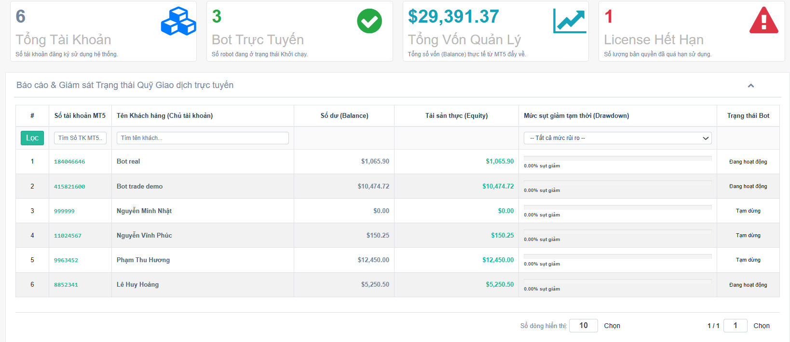
A. Hệ thống 4 khối thẻ chỉ số tổng hợp (Top Widgets):
Cung cấp số liệu tổng lực và trạng thái lũy kế của toàn bộ danh mục tài khoản:
- Khối 1 - Tổng Tài Khoản: Số lượng tài khoản giao dịch đã được liên kết và thiết lập thành công trên hệ thống điều khiển.
- Khối 2 - Bot Trực Tuyến: Số lượng hệ thống Robot đang ở trạng thái hoạt động trực tuyến và sẵn sàng giao dịch trên thị trường.
- Khối 3 - Tổng Vốn Quản Lý: Số tiền vốn gốc lũy kế hiện có, đại diện cho tổng quy mô dòng vốn đầu tư đang được vận hành.
- Khối 4 - License Hết Hạn: Tổng số lượng tài khoản đã hết hạn sử dụng bản quyền cần được nạp phí chu kỳ để tiếp tục hoạt động.
B. Bảng dữ liệu báo cáo chi tiết và Bộ lọc trạng thái rủi ro:
Khung hiển thị chi tiết số liệu tài chính thời gian thực của từng tài khoản giao dịch cụ thể:
- Đối soát Số dư (Balance) và Tài sản thực (Equity): Giúp Khách hàng kiểm tra song song giữa số tiền vốn gốc ban đầu và số tiền thực tế hiện có sau khi đã tính toán các lệnh đang chạy. Nếu hai con số này bằng nhau, tài khoản hiện tại đang ở trạng thái an toàn tuyệt đối và không có lệnh thả nổi.
- Mức sụt giảm tạm thời (Drawdown) dạng Progress Bar: Thanh đồ thị biểu thị tỷ lệ phần trăm vốn đang bị sụt giảm tạm thời do gồng lỗ vị thế, tự động đổi màu sắc cảnh báo theo các mức độ rủi ro để Khách hàng dễ nhận diện.
- Bộ lọc Trạng thái Rủi ro (Drawdown Filter): Tính năng phân loại nhanh danh sách tài khoản theo các hạn mức rủi ro đã quy ước (An toàn <10%, Cảnh báo 10%-30%, Nguy hiểm >30%), giúp Khách hàng tập trung theo dõi các tài khoản cần can thiệp vốn hoặc điều chỉnh thông số khi thị trường có biến động mạnh.
5. Nhật Ký Lịch Sử Cấp Mới & Gia Hạn Bản Quyền Bot (License Log)
Phân hệ lưu trữ toàn bộ các tiến trình thay đổi thời hạn sử dụng của các mã khóa bản quyền phần mềm, phục vụ mục đích kiểm tra minh bạch thời gian sử dụng dịch vụ và thu phí định kỳ của Khách hàng.
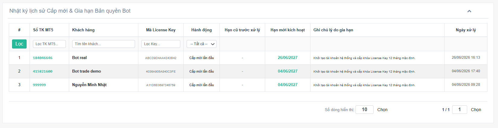
Giải nghĩa chi tiết các thông tin hiển thị trên bảng đối soát:
Số TK MT5: Số hiệu tài khoản giao dịch áp dụng thay đổi thời hạn bản quyền.-
Khách hàng: Tên đầy đủ của Khách hàng sở hữu tài khoản chạy Robot.
Mã License Key: Chuỗi khóa bảo mật được áp dụng tại thời điểm ghi nhận.-
Hành động: Phân loại nghiệp vụ bao gồm Cấp mới lần đầu (Khi khởi tạo tài khoản) hoặc Gia hạn License (Khi hoàn tất đóng phí chu kỳ tiếp theo).
Hạn cũ trước xử lý: Ngày hết hạn cũ của tài khoản trước khi thực hiện điều chỉnh. Nếu là tài khoản mới, trường này sẽ hiển thị dấu gạch ngang.-
Hạn mới kích hoạt: Thời hạn hết hạn mới sau khi đã kích hoạt gia hạn thành công (Hiển thị bằng màu sắc nổi bật để dễ kiểm tra).
Ghi chú lý do gia hạn: Nội dung ghi chú thông tin thu phí bản quyền hoặc lý do điều chỉnh gia hạn đặc biệt từ tổng đài viên.-
Ngày xử lý: Ngày giờ thực tế hệ thống thực hiện cập nhật dữ liệu thành công.
Hệ thống các bộ lọc tra cứu thông tin nhanh:
Khách hàng sử dụng hàng công cụ tìm kiếm ngay tại đầu bảng để nhanh chóng truy xuất dữ liệu mong muốn:
- Lọc TK MT5: Nhập số tài khoản cụ thể để kiểm tra toàn bộ lịch sử nạp phí và thời hạn của tài khoản đó.
- Tìm tên khách: Tra cứu nhanh lịch sử bản quyền theo tên chủ sở hữu.
- Lọc Key: Nhập chuỗi khóa bảo mật để tìm kiếm tài khoản giao dịch tương ứng.
- Menu Hành động: Ô tùy chọn lọc riêng biệt danh sách theo tác vụ
Cấp mớihoặcGia hạnđể tiện đối soát số liệu kế toán.
6. Nhật Ký Bảo Mật Hệ Thống (System Security Log)
Phân hệ Nhật ký Bảo mật đóng vai trò là hệ thống giám sát và lưu vết tự động mọi hành vi tương tác dữ liệu trên nền tảng. Tính năng này ghi lại chính xác mọi thao tác thay đổi tham số chiến lược, giúp bảo vệ quyền lợi, tăng tính minh bạch và triệt tiêu hoàn toàn rủi ro tranh chấp thông số trong quá trình vận hành giữa Khách hàng và nhân viên hỗ trợ.
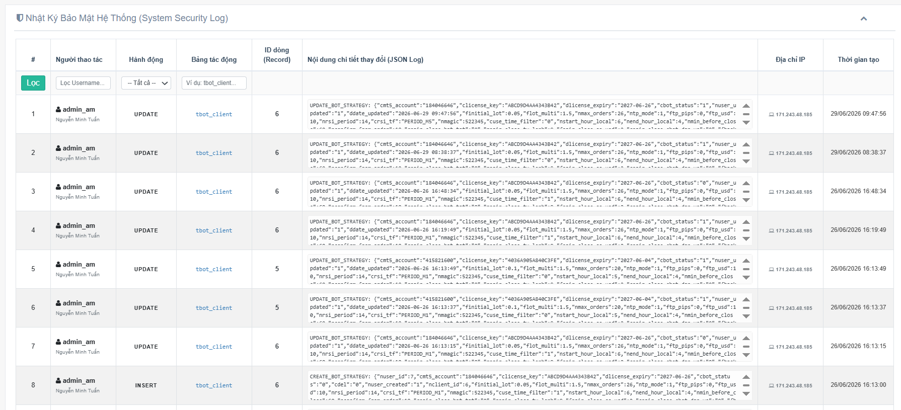
Giải nghĩa các trường dữ liệu kiểm toán trên bảng:
Hành động: Loại thao tác biến động dữ liệu bao gồm INSERT (Tạo mới hồ sơ tài khoản) hoặc UPDATE (Thay đổi tham số cấu hình lưới, thay đổi thời hạn bản quyền hoặc tắt/bật Robot từ xa).-
Bảng tác động: Phân hệ dữ liệu chịu sự thay đổi trực tiếp trên hệ thống.
ID dòng: Mã số định danh của dòng thông tin trong hệ thống chịu sự tác động.-
Nội dung chi tiết thay đổi: Bảng lưu vết liệt kê chi tiết toàn bộ danh sách các giá trị tham số giao dịch, Lot và bước giá trước và sau khi thực hiện thay đổi để Khách hàng đối soát khi cần thiết.
Địa chỉ IP: Địa chỉ mạng Internet thực tế của thiết bị thực hiện thao tác sửa đổi dữ liệu.-
Thời gian tạo: Mốc ngày giờ chính xác đến từng giây ghi nhận hành động lưu cấu hình thành công.
7. Cổng Giám Sát Dành Cho Khách Hàng (Client Dashboard)
Cổng thông tin Khách hàng (Client Portal) cung cấp giao diện theo dõi độc lập, bảo mật và tối ưu hóa hiển thị dành riêng cho người dùng cuối thuê Robot. Khách hàng có thể truy cập trực tiếp thông qua đường dẫn chính thức: https://hethongso.com/itrade/index.php/do_login_client. Tại đây, Khách hàng có quyền giám sát toàn bộ các chỉ số tài chính, theo dõi tham số chiến lược và sử dụng nút bấm ngắt lệnh khẩn cấp trực tuyến.
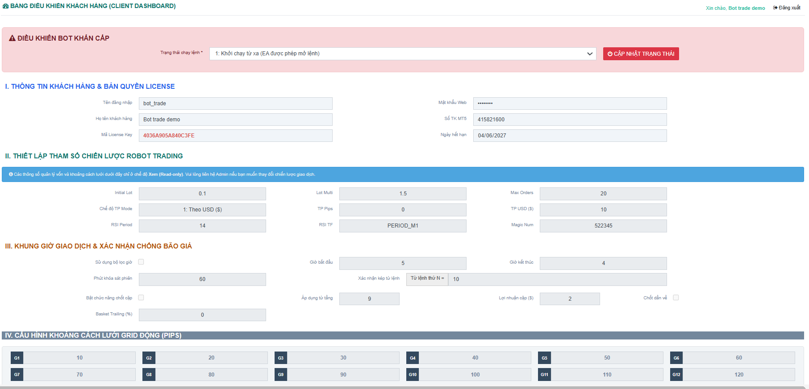
A. Thanh tiêu đề & Thông tin định danh:
Nằm trên cùng của trang Portal, hiển thị chính xác trạng thái phiên làm việc hiện tại của tài khoản:
- Lời chào User: Hệ thống hiển thị họ tên của Khách hàng dựa trên tài khoản đăng nhập (Ví dụ:
Xin chào, Nguyễn Văn A) để xác định đúng tài khoản sở hữu. - Nút Đăng xuất: Cho phép Khách hàng chủ động thoát tài khoản và xóa sạch các dữ liệu lưu vết của phiên làm việc để bảo mật thông tin trên thiết bị.
B. Khối hộp điều khiển ngắt Robot khẩn cấp (Kill Switch):
Khối chức năng có màu nền nổi bật ở đầu giao diện. Đây là công cụ can thiệp trực tuyến duy nhất mà Khách hàng được quyền thao tác để tác động trực tiếp lên hệ thống vận hành từ xa của Robot:
- Trạng thái chạy lệnh: Khách hàng nhấp chọn chuyển đổi linh hoạt giữa
1: Khởi chạy từ xa (Robot được quyền mở lệnh)hoặc0: Tạm ngừng từ xa (Robot lập tức chặn vào lệnh). - Nút "Cập nhật trạng thái": Khi Khách hàng bấm nút này, cấu hình dừng lệnh sẽ được gửi đi ngay lập tức. Trong vòng tối đa 60 giây, Robot đang chạy tại máy chủ từ xa sẽ nhận tín hiệu và tự động đóng băng toàn bộ hành vi nhồi thêm lệnh mới nhằm bảo vệ dòng vốn trước các thời điểm thị trường bão táp hoặc có tin tức cực mạnh.
C. Các phân khu tham số chiến lược (Chế độ Xem - Read-only):
Toàn bộ các thông số quản lý vốn, khối lượng Lot giao dịch, bước giá ma trận lưới từ Phần I đến Phần IV trên giao diện này đều ở trạng thái **Khóa hiển thị cố định (Màu nền xám)**. Khách hàng có quyền xem trực quan để đối soát tính minh bạch của thuật toán, nhưng không thể tự ý chỉnh sửa nhằm bảo đảm tính ổn định tuyệt đối của hệ thống vận hành và tránh các rủi ro thao tác sai quy trình làm hỏng chu kỳ lệnh.
8. Hướng Dẫn Cài Đặt & Kích Hoạt Hệ Thống Bot Trên MT5
Để hệ thống Robot Giao dịch (EA) hoạt động trên nền tảng MetaTrader 5 kết nối mượt mà với trung tâm quản lý đám mây EA HUB, Khách hàng thực hiện đầy đủ quy trình thiết lập gồm 4 bước đơn giản dưới đây. Việc cài đặt chính xác sẽ giúp Robot luôn duy trì trạng thái cập nhật chỉ số và giao dịch ổn định.
TRƯỚC KHI ĐƯA HỆ THỐNG VÀO VẬN HÀNH VÀ SỬ DỤNG CHÍNH THỨC TRÊN TÀI KHOẢN TIỀN THẬT (LIVE ACCOUNT STANDARD), KHÁCH HÀNG BẮT BUỘC PHẢI KHỞI CHẠY BOT TRÊN TÀI KHOẢN THỬ NGHIỆM (DEMO ACCOUNT) HOẶC TÀI KHOẢN PHÂN NHỎ (CENT ACCOUNT) TRONG THỜI GIAN ÍT NHẤT TỪ 1 ĐẾN 2 TUẦN.
* Lý do: Việc này giúp đảm bảo tính đồng bộ thông số lưới lệnh, kiểm tra tốc độ phản hồi kết nối từ xa từ máy chủ ảo về hệ thống Web và kiểm soát hành vi đi lệnh của thuật toán trong môi trường thực tế mà không gây nguy hiểm hay tổn thất cho nguồn vốn lớn của khách hàng. Khách hàng chỉ được chuyển đổi sang tài khoản Live khi hệ thống giám sát đã xác nhận cấu hình lưới hoạt động ổn định, khớp 100% mục tiêu quản lý vốn.
Bước 8.1: Tải bộ cài đặt Robot từ hệ thống
Khách hàng truy cập tải trực tiếp file cài đặt chính thức của hệ thống theo liên kết dưới đây:
Bước 8.2: Cài đặt Robot vào phần mềm MT5
Để đảm bảo Robot được cài đặt chính xác vào đúng tài khoản và sàn giao dịch bạn đang vận hành, hãy thực hiện theo quy trình 3 bước sau:
- Trên phần mềm MT5 bạn muốn chạy Bot, nhấn vào menu File ở góc trái trên cùng → Chọn dòng Open Data Folder (Mở thư mục dữ liệu).
- Cửa sổ thư mục máy tính xuất hiện, bạn truy cập lần lượt vào: MQL5 → Experts → Advisors.
- Bạn tiến hành sao chép (Copy) file
BOT_v33.ex5đã tải ở Bước 8.1 và dán thẳng (Paste) vào thư mục Advisors này là hoàn tất.
* Sau khi dán xong, bạn quay lại giao diện MT5, click chuột phải vào mục Expert Advisors tại cửa sổ Navigator chọn Refresh để Robot hiển thị lên màn hình.
Bước 8.3: Cấp quyền kết nối dữ liệu ngoại vi (WebRequest URL Authorization)
Mặc định, phần mềm MetaTrader 5 sẽ chặn các kết nối mạng ra bên ngoài để bảo vệ an toàn bảo mật. Khách hàng cần mở khóa quyền truy cập Internet cho cổng máy chủ hệ thống theo đúng quy trình sau:
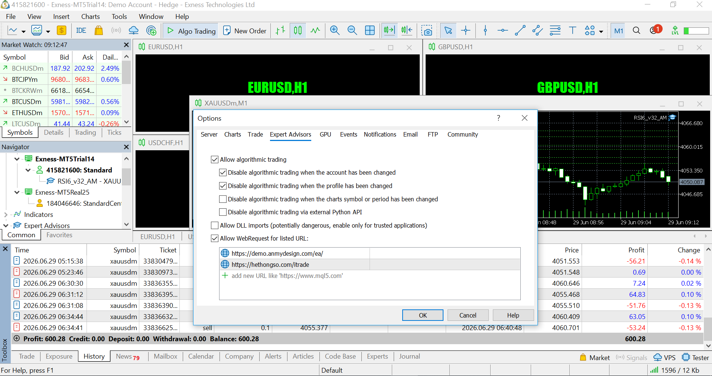
- Trên thanh menu của MT5, chọn Tools (Công cụ) → chọn Options (Tùy chọn) [Hoặc sử dụng tổ hợp phím tắt nhanh
Ctrl + O]. - Khi hộp thoại Options xuất hiện, nhấp chuột chuyển sang tab Expert Advisors (Cố vấn thương mại).
- Tích chọn vào ô vuông: "Allow WebRequest for listed URL" (Cho phép yêu cầu Web cho các URL liệt kê dưới đây).
- Nhấp đúp chuột vào biểu tượng dấu cộng màu xanh, nhập chính xác đường dẫn cổng kết nối hệ thống:
https://hethongso.com/itraderồi nhấn OK để lưu lại.
Bước 8.4: Nhập License Key và Kích hoạt quyền tự động giao dịch cho Robot
Thực hiện thao tác kéo file Robot BOT_v33 từ cửa sổ Navigator thả trực tiếp vào đồ thị sản phẩm giao dịch mong muốn (Ví dụ: Đồ thị Vàng XAUUSD,M1). Bảng thông số thiết lập sẽ xuất hiện cấu hình như sau:
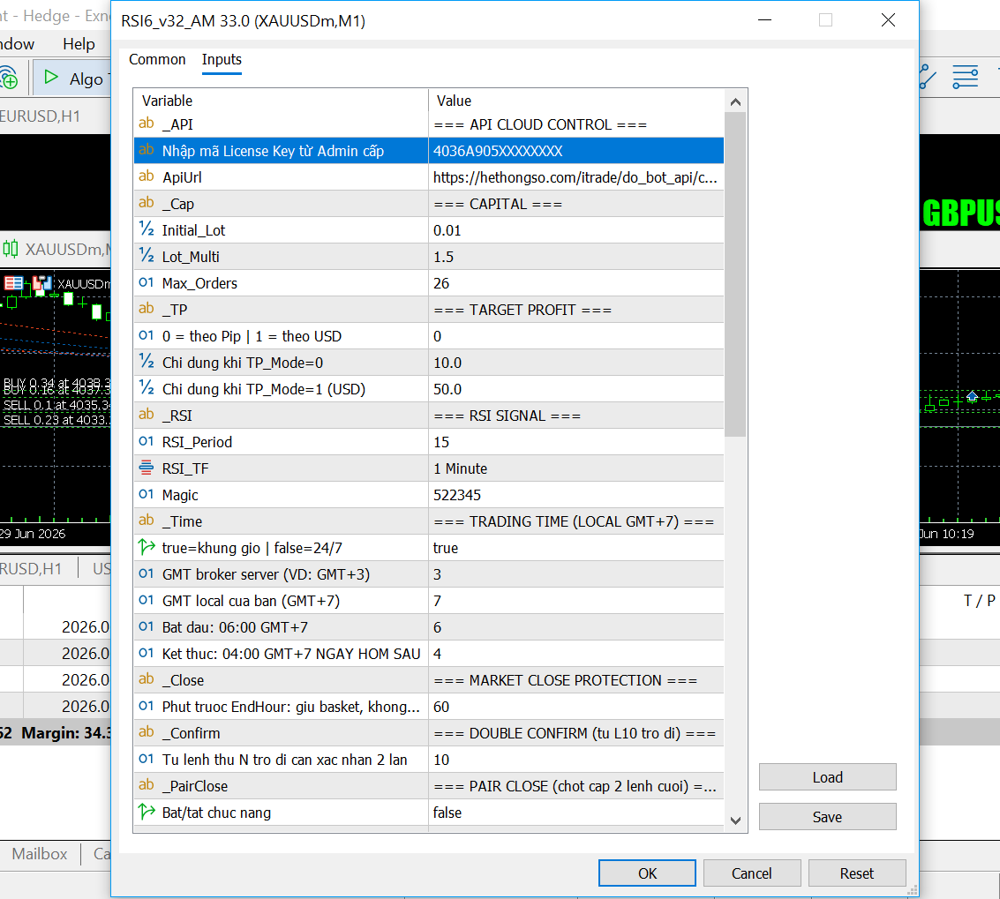
- Tại bảng thông số, chuyển sang tab Inputs (Tham số đầu vào). Tìm tới dòng
Nhập mã License Key từ Admin cấp, hãy tiến hành nhập chính xác chuỗi khóa bảo mật được cấp từ hệ thống quản lý vào ô giá trị (Ví dụ:4036A905XXXXXXXX). - Nhấp chuột chuyển sang tab Common (Cài đặt chung) ở góc trên bên trái và tích chọn vào ô vuông: "Allow Algo Trading" (Cho phép giao dịch thuật toán) để cấp quyền vào lệnh. Nhấp nút OK để Robot bám vào đồ thị sản phẩm.
- Cuối cùng, hãy kiểm tra nút bấm biểu tượng Algo Trading trên thanh công cụ tổng phía trên cùng của phần mềm MT5. Đảm bảo nút này đang ở trạng thái kích hoạt **Màu xanh** (Biểu tượng tam giác Play màu xanh). Nếu nút này hiển thị màu đỏ, hệ thống phần mềm đang khóa giao dịch toàn cục, Robot sẽ bị chặn không thể gửi lệnh lên sàn.
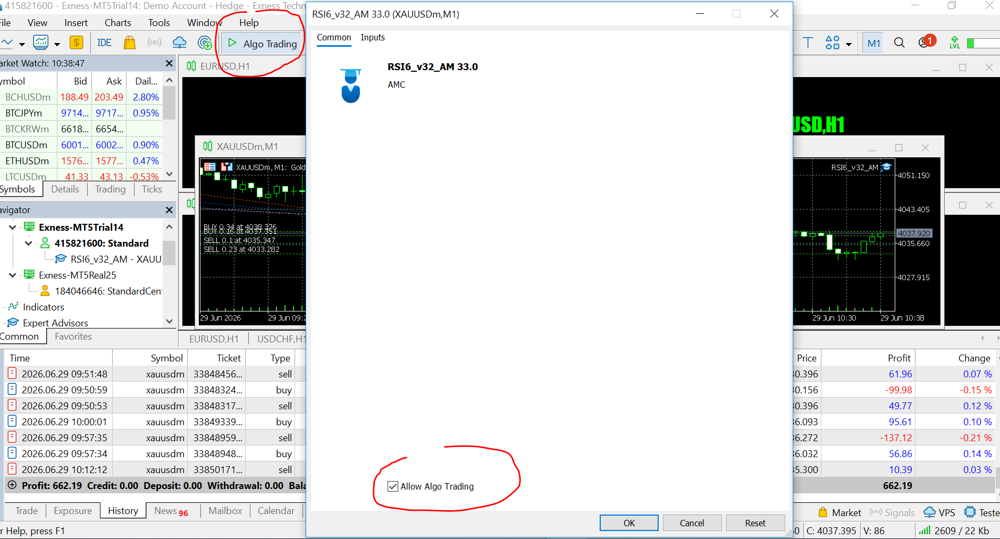
Để Robot có thể rà soát liên tục tín hiệu thị trường, quét chu kỳ đóng lệnh và quản lý lưới lệnh chính xác 24/7 theo thời gian thực, phần mềm MT5 chứa Robot bắt buộc phải được duy trì trạng thái chạy liên tục và có kết nối mạng Internet ổn định, không ngắt quãng. Khách hàng lựa chọn 1 trong 2 giải pháp hạ tầng vận hành:
- Giải pháp 1 (Sử dụng máy tính cá nhân): Máy tính cá nhân (PC/Laptop) của Khách hàng phải bật liên tục, không được tắt nguồn, không được để máy rơi vào trạng thái ngủ tạm thời (Sleep/Hibernate) và không được mất kết nối Internet. Nếu máy tính cá nhân bị tắt, Robot sẽ hoàn toàn ngắt kết nối và không thể xử lý giỏ lệnh đang chạy trên thị trường, dễ dẫn đến rủi ro sụt giảm tài sản lớn nếu thị trường có biến động mạnh.
- Giải pháp 2 (Thuê máy chủ đám mây Cloud VPS - Khuyên dùng): Khách hàng nên chủ động chạy phần mềm MT5 và cài đặt Robot cố định trên hệ thống Máy chủ ảo Cloud VPS (Virtual Private Server) sử dụng hệ điều hành Windows. VPS là hạ tầng công nghệ chuyên dụng chạy liên tục 365 ngày không bao giờ tắt, sở hữu đường truyền mạng tốc độ cao và nguồn điện dự phòng tiêu chuẩn, giúp đảm bảo an toàn tối đa cho quỹ tài khoản, tối ưu hóa tốc độ xử lý vị thế và giúp Khách hàng không cần phải treo máy tính cá nhân tại nhà.
9. Phân Tích Vòng Đời Đi Lệnh Tự Động (Order Lifecycle)
Hệ thống Robot Giao dịch vận hành theo một guồng quay logic khép kín, tự động hóa toàn bộ từ khâu dò tìm tín hiệu cho đến khi tất toán sạch giỏ lệnh mang lợi nhuận về tài khoản. Vòng đời của một chuỗi lưới lệnh trải qua 3 giai đoạn cốt lõi với sự liên kết chặt chẽ của các tham số thiết lập trên Web HUB:
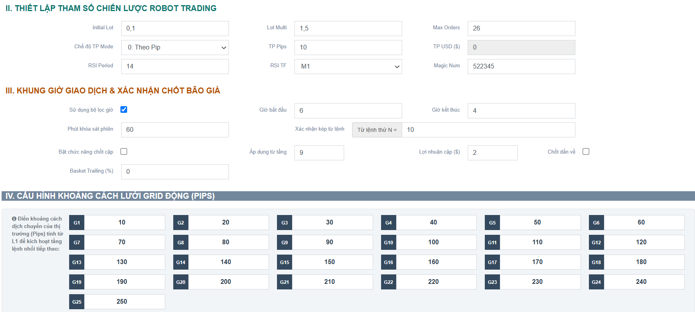
Giai đoạn 9.1: Khởi tạo vị thế đầu tiên (Mở lệnh gốc L1)
Khi tài khoản ở trạng thái trống lệnh, Robot sẽ đứng ở trạng thái chờ và liên tục quét điều kiện thị trường dựa trên hai lớp bộ lọc bảo vệ:
- Lớp lọc thời gian (Khung giờ giao dịch): Nếu tính năng
Sử dụng bộ lọc giờđược kích hoạt, Robot đối chiếu thời gian thị trường để bảo đảm nằm trong khoảng từGiờ bắt đầuđếnGiờ kết thúcmới bắt đầu tìm tín hiệu. Nếu nằm ngoài khung giờ này, phần mềm tự động dừng quét để tránh các thời điểm thị trường có biên độ biến động rủi ro cao hoặc thiếu thanh khoản. - Lớp lọc xu hướng (Chỉ báo kỹ thuật RSI): Robot dựa vào các thông số cài đặt
RSI Periodvà khung thời gian đồ thịRSI TFđể tính toán vùng giá quá mua hoặc quá bán tức thời của thị trường.
• Vị thế BUY (Mua) L1: Tự động kích hoạt khi chỉ báo RSI rớt xuống vùng giá Quá bán trên đồ thị → Hệ thống xác định thị trường có xu hướng hồi phục đi lên.
• Vị thế SELL (Bán) L1: Tự động kích hoạt khi chỉ báo RSI vượt lên vùng giá Quá mua trên đồ thị → Hệ thống xác định thị trường có xu hướng đảo chiều đi xuống. - Khối lượng vị thế gốc: Lệnh đầu tiên L1 luôn được mở chính xác với khối lượng Lot đã được Khách hàng thiết lập tại mục
Initial Lottrên bảng điều khiển Web.
Giai đoạn 9.2: Triển khai ma trận lưới phòng thủ (Mở các vị thế bảo vệ kế tiếp)
Sau khi lệnh đầu tiên L1 được mở, nếu thị trường bất ngờ xảy ra biến động lớn và đi ngược hướng kỳ vọng, Robot sẽ tạm thời bỏ qua chỉ báo xu hướng RSI. Lúc này, cơ chế quản lý vốn thông minh và ma trận lưới khoảng cách sẽ chính thức tiếp quản tài khoản để tìm điểm hòa vốn an toàn:
- Khoảng cách lưới lệnh động (Ma trận Pips): Robot liên tục đo lường khoảng cách dịch chuyển ngược hướng của đường giá dựa trên bảng thông số từ
G1 đến G25. Khoảng cách dãn rộng dần theo thiết lập (G1=10 pips, G2=20 pips, G3=30 pips...) giúp lưới lệnh được trải rộng tối đa, giữ tài khoản ở trạng thái an toàn, không bị nhồi lệnh quá dày khi thị trường rơi vào bão giá. - Khối lượng giao dịch lũy tiến: Khối lượng của vị thế lệnh sau sẽ bằng khối lượng lệnh ngay trước đó nhân với hệ số tại mục
Lot Multi(Ví dụ: L1 = 0.1 Lot → L2 = 0.15 Lot → L3 = 0.22 Lot...) nhằm tối ưu hóa và kéo điểm hòa vốn tổng của giỏ lệnh về gần sát với giá thị trường nhất. Chuỗi lệnh nhồi bảo vệ sẽ dừng lại hoàn toàn khi đạt tới ngưỡng cấu hình tại ôMax Ordersđể bảo đảm kiểm soát rủi ro tuyệt đối cho nguồn vốn. - Cơ chế xác nhận kép (Chống bão giá): Khi chuỗi lệnh kéo sâu đạt tới ngưỡng
Xác nhận kép từ lệnh thứ N, hệ thống phòng ngự nâng cao sẽ tự động kích hoạt. Robot sẽ không vào lệnh tự động dựa theo khoảng cách Pips thuần túy nữa, mà bắt buộc phải đợi đường giá thị trường hoàn tất chu kỳ kiểm tra dao động tối thiểu hai lần tại vùng giá mục tiêu, tránh việc nhồi lệnh liên tục ngay giữa một cây nến bão đang đâm mạnh một chiều.
Giai đoạn 9.3: Tất toán và Thu hồi dòng vốn (Take Profit / Cắt tỉa cặp lệnh)
Mục tiêu cuối cùng của Robot là đóng toàn bộ giỏ lệnh ở trạng thái có lợi nhuận tổng dương hoặc an toàn nhất cho Khách hàng thông qua 2 cơ chế đóng lệnh linh hoạt:
- Cơ chế chốt lời tổng giỏ lệnh (Take Profit Mode):
• Nếu chọn chế độ chốt lời theo Điểm giá (`0: Theo Pip`): Phần mềm dựa vào thông sốTP Pipsđể tính toán điểm chốt lời tổng động. Mỗi khi lưới mở thêm lệnh có khối lượng lớn ở vùng giá có lợi hơn, điểm hòa vốn và điểm chốt lời tổng này tự động được kéo về sát với giá hiện tại. Thị trường chỉ cần hồi nhẹ chạm tới điểm này, toàn bộ giỏ lệnh sẽ đóng sạch, mang về biên lợi nhuận đúng mục tiêu.
• Nếu chọn chế độ chốt lời theo Tiền mặt (`1: Theo USD ($)`): Robot tính toán tổng trạng thái lợi nhuận của toàn bộ giỏ lệnh bằng Đô-la, chạm đúng mốc số tiền cấu hình tại ôTP USD ($)sẽ kích hoạt lệnh tự động tất toán sạch tài khoản. - Cơ chế cắt tỉa vị thế giảm tải (Chốt cặp nâng cao): Khi tính năng
Bật chức năng chốt cặphoạt động và giỏ lệnh đạt đến ngưỡng cài đặt từ tầng quy định:
• Trường hợp KHÔNG chọn "Chốt dần về": Robot thực hiện lấy vị thế lệnh có mức âm sâu nhất (L1) bắt cặp tất toán chung với các vị thế lệnh có mức lãi đậm nhất ở đáy lưới (L9, L10...) khi tổng tiền lời trạng thái của hai vị thế này đạt mức tiền dương cài đặt tại ôLợi nhuận cặp ($). Cơ chế này giúp thu hẹp biên độ lưới và giải phóng tiền ký quỹ cho tài khoản nhanh nhất.
• Trường hợp CÓ chọn "Chốt dần về": Robot đảo ngược logic, thực hiện bắt cặp và chốt lời cuốn chiếu từ dưới lên (L9 bắt cặp với L8, L10 bắt cặp với L7...). Tính năng này giúp giải phóng sớm các lệnh có khối lượng Lot lớn ở vùng bão giá, thu hẹp quy mô tổng của lưới dần về phía các lệnh gốc ban đầu để bảo vệ tài khoản dài hạn.